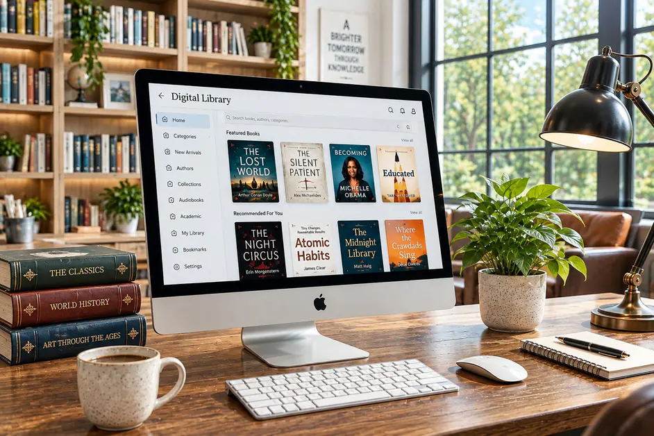
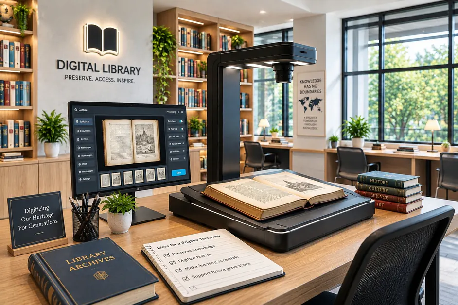
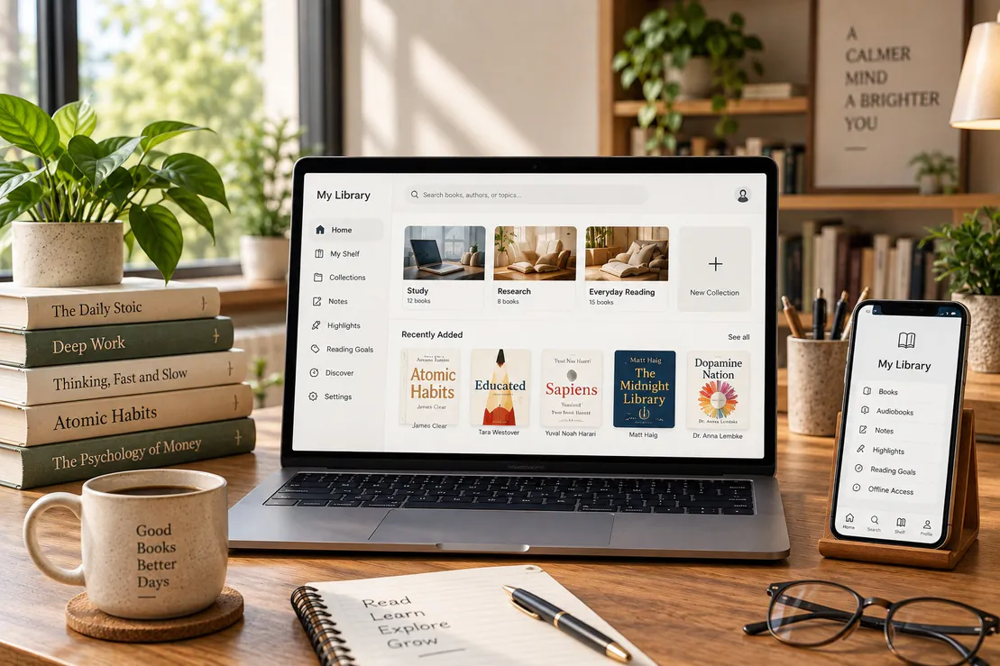

⌕
01
Ebook Lending
Borrow digital titles instantly and return them automatically at the end of the loan.
Learn more →DIGITAL KNOWLEDGE, BEAUTIFULLY ORGANISED
Discover flexible services designed for independent readers, students, educators and lifelong learners.
EXPLORE & DISCOVER
Use flexible library services for borrowing, listening, research, account management and personalised member support.
Borrow digital titles instantly and return them automatically at the end of the loan.
Learn more →Listen to literature, business, biographies and learning titles wherever you go.
Learn more →Search journals, reference databases, citations and verified academic resources.
Learn more →Save favourites, create reading lists and continue from your last page.
Learn more →Use focused reading rooms, note tools and distraction-free learning modes.
Learn more →Ask for recommendations, research guidance or help finding a specific resource.
Learn more →
SERVICE HUB
STACKLY services connect lending, audio access, journal discovery and librarian support so members can move smoothly from need to resource.
View Service Options →RESOURCE FORMATS
MEMBER SUPPORT
Get help turning a topic into focused searches and reliable sources.
Resolve access, renewals, saved lists and dashboard questions.
Use guides, collections and study tools prepared for common goals.
DIGITAL FEATURES
Loans, saved shelves, recommendations, notes and support requests stay connected so readers do not have to rebuild context each time they return.
Open Member Tools
SERVICE FLOW
Choose a title, topic, format or support need from the platform.
Read, listen, cite, save or organise resources in your account.
Ask for help when a search, loan or research path needs guidance.
SERVICE FEATURES
See borrowed titles, due dates, renewals and current progress.
Group books, journals and references for classes, projects or personal goals.
Narrow results by ebook, audio, journal, reference or collection.
Send questions when you need recommendations or source guidance.
Keep useful references attached to the work they support.
Continue service activity across desktop, tablet and mobile.
“The best library service is the one that quietly clears the path between a question and a useful source.”
STACKLY MEMBER SUPPORT
SERVICE RESOURCES
Understand loan periods, renewals and title availability.
Learn where to begin with journals and reference collections.
Set up lists, preferences and support access after joining.
SERVICE QUESTIONS
Members can use ebook lending, audiobooks, saved shelves, research discovery tools and basic librarian support.
Yes. You can request guidance for topics, keywords, journals, citations and collection recommendations.
Yes. Loans, lists, notes and progress are designed to stay available across supported screen sizes.

FLEXIBLE READING
Move between ebooks, audiobooks, journals and reference resources without changing the way you organise your learning.

RESEARCH SUPPORT
Subject pathways and librarian support help you find reliable material, compare sources and save them for later work.

BORROWING SUPPORT
Members can see current loans, due dates and reading progress from one dashboard. The experience is designed to make routine library actions quick and understandable.
RESEARCH SERVICES
Our research services help readers move from broad keywords to focused journals, reference works and subject collections. Helpful guidance is built into the experience rather than hidden in separate tools.
LIBRARY IN FOCUS